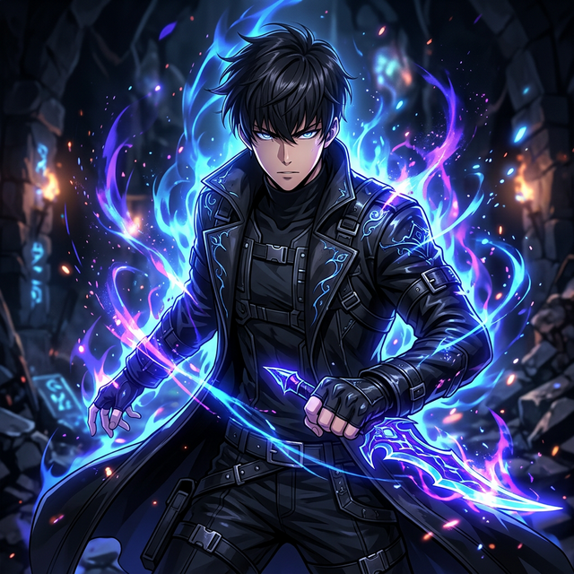
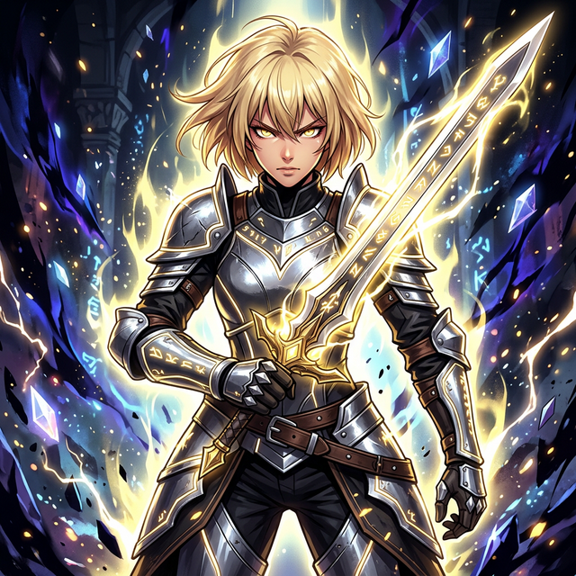
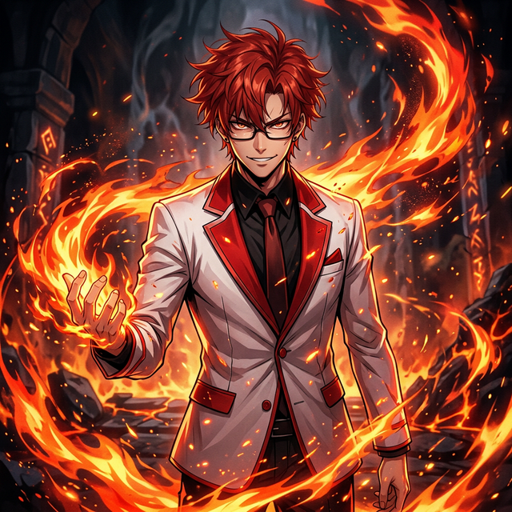
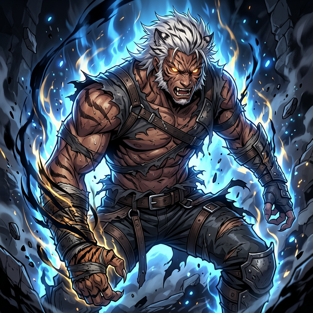

Surge de las Sombras
En un mundo donde los cazadores deben conquistar mazmorras mortales para proteger a la humanidad, un débil cazador de rango E es elegido por un Sistema misterioso. Sé testigo del ascenso del Monarca de las Sombras.
Los Cazadores
Figuras clave que definen el destino de la humanidad en su lucha por la supervivencia.

Sung Jin-woo
성진우Inicialmente conocido como el 'Cazador más débil de la humanidad', Jin-woo despierta como un 'Jugador' de un sistema místico, lo que le permite subir de nivel sin fin. Comanda un ejército inmortal de soldados de sombra.

Cha Hae-in
차해인La submaestra del Gremio de Cazadores. Es especialmente sensible al olor del maná y encuentra que la mayoría de cazadores huelen mal, a excepción de Sung Jin-woo, que huele a bosque fresco.

Choi Jong-in
최종인El Maestro del Gremio de Cazadores, apodado 'El Arma Definitiva'. Es un maestro de la magia de fuego, capaz de incinerar hordas enteras de monstruos con hechizos masivos.

Baek Yoon-ho
백윤호Maestro del Gremio Tigre Blanco. Posee magia de transformación, lo que le permite adoptar los rasgos de un monstruoso tigre blanco y potenciar inmensamente sus capacidades físicas.